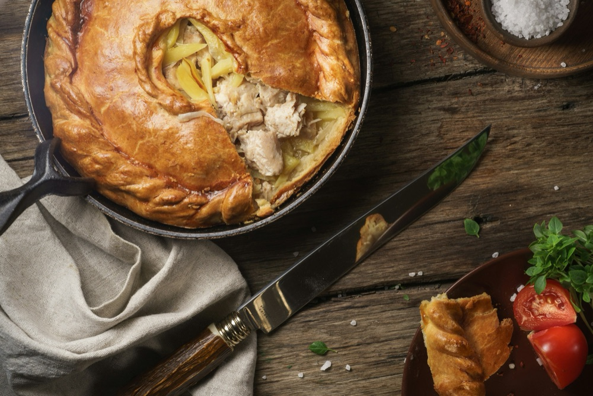

Chicken Pot Pie
Home

Description
This chicken pot pie is the ultimate comfort food: a flaky, golden crust
wrapped around a creamy filling of tender chicken, carrots, peas, and
potatoes. The filling is thickened with a simple homemade sauce flavored
with thyme and a touch of white wine or broth.
Using a store-bought crust keeps it easy enough for a weeknight, and
rotisserie chicken saves even more time. Let the pie rest for 10 minutes
after baking so the filling sets. Serves 6 to 8.
Ingredients
- 2 refrigerated pie crusts (9-inch), or 1 double-crust recipe
- 3 tablespoons unsalted butter
- 1 medium yellow onion, diced
- 2 medium carrots, peeled and diced
- 2 celery stalks, diced
- 1 medium Yukon Gold potato, peeled and diced small
- 3 cloves garlic, minced
- ⅓ cup all-purpose flour
- 1¾ cups chicken broth
- ¾ cup whole milk
- 1 teaspoon dried thyme
- 1 teaspoon salt, plus more to taste
- ½ teaspoon black pepper
- 3 cups cooked chicken, shredded or cubed
- 1 cup frozen peas
- 1 large egg, beaten with 1 tablespoon water (for egg wash)
Steps
-
Preheat the oven to 400°F (200°C). Fit one pie crust into a 9-inch
deep-dish pie plate and set aside.
-
Melt the butter in a large skillet or Dutch oven over medium heat. Add
the onion, carrots, celery, and potato and cook for 8 to 10 minutes,
until the vegetables begin to soften.
- Stir in the garlic and cook for 1 minute, until fragrant.
-
Sprinkle the flour over the vegetables and stir constantly for 1 to 2
minutes to cook out the raw flour taste.
-
Slowly pour in the chicken broth and milk, stirring continuously. Add
the thyme, salt, and pepper.
-
Simmer for 5 to 7 minutes, stirring often, until the sauce is thick and
the potatoes are tender.
-
Stir in the chicken and peas. Taste and adjust the seasoning, then
remove from the heat.
-
Pour the filling into the prepared pie crust and spread it evenly.
-
Place the second crust over the top, trim the excess, and crimp the
edges to seal. Cut 4 small slits in the top to let steam escape.
- Brush the top crust with the egg wash.
-
Place the pie on a baking sheet to catch any drips and bake for 35 to 40
minutes, until the crust is deep golden brown and the filling is
bubbling.
- Let the pie rest for 10 minutes before slicing and serving.